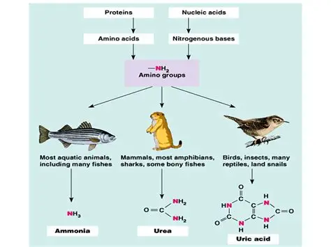

Homeostasis in Animals
- ammonia in fishes
- urea in mammals
- uric acid in birds
Ammonia is very harmful to body as it dissolves quickly in water.About 500 ml of water is required to dilute
1 g of ammonia to a non-toxic concentration.Its is awaste of fishes since they live in hypotonic
environment.
Urea is less toxic than ammonia and requires less water for excretion. Mammals convert ammonia into urea in
the liver, which is then excreted in urine.
Uric acid is the least toxic and requires minimal water for excretion. Birds convert ammonia into uric acid,
which is excreted as a paste with minimal water loss.
